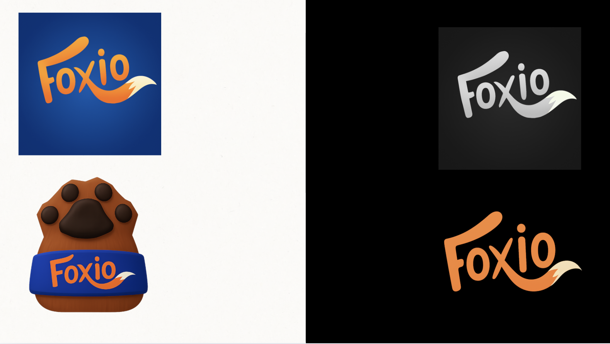
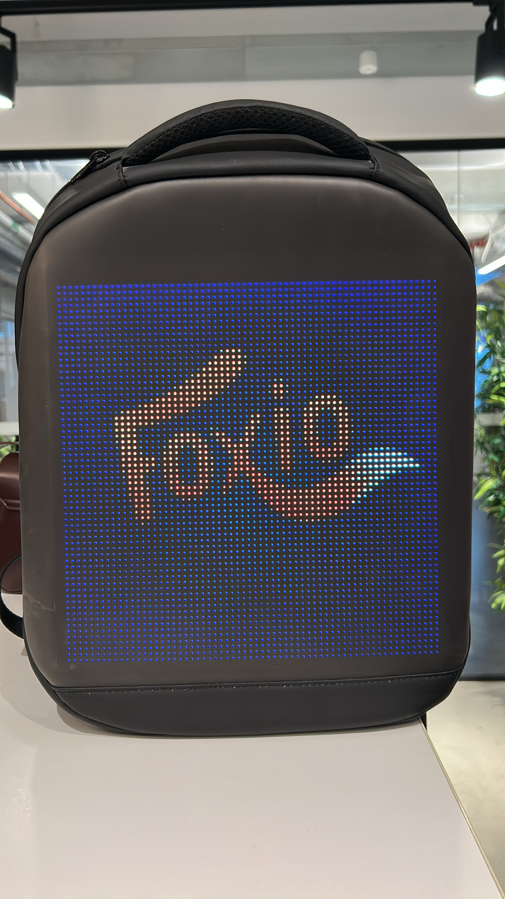
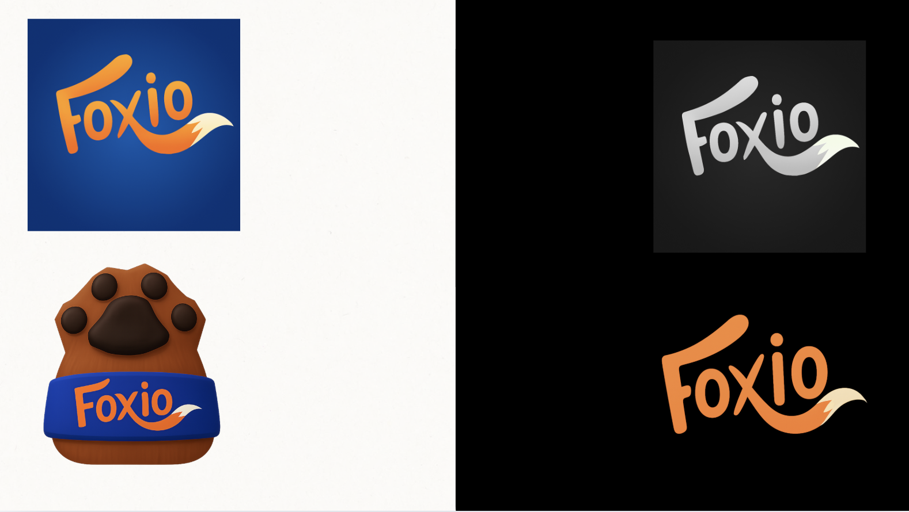
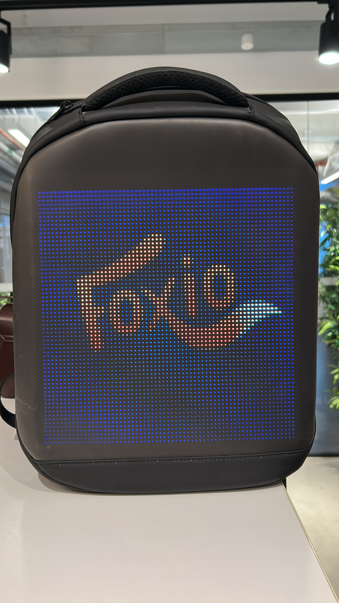

FOXIO 🦊
Project Overview
Project time
March - April 2025 (8 weeks)
My roles
3D Artist, Project Management, Unity Development
Goals
Development of an idea to create a startup.
Technical info
VR, single play hand controlled with gazing mechanism
Unity
Procreate
Maya
GitHub
About this project
Bla bla bla
My contributions


3D modeling in Maya
Hand painted textures in Procreate
Materials in Unity
Environment design
Shaders
Branding
Storyboard
Night to day transition
Project management
3D Models
Flat textures
.png)
.png)
.png)
.png)
 - kopia.png)
.png)
 - kopia.png)
Night to Day Transition
Branding
.png)
.png) 



.JPG)
User Tests
We had the privilege of visiting Stenhammarskolan in Flen, a school that’s truly pioneering the use of XR in education in Sweden.
During our time there, we conducted a user test of our VR application, FOXIO 🦊, and received insightful feedback directly from the students. Their thoughts gave us valuable learnings and highlighted exciting opportunities for improvement.


Mitt Bildgalleri